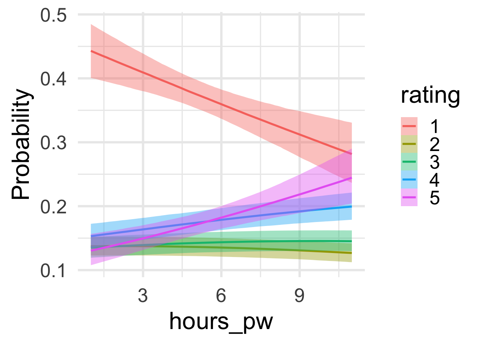

Ordinal regression is often used when the dependent variable is ordinal. A common case in linguistics are human judgments (e.g., rate this sentence for its naturalness, on a scale from 1 (completely unnatural) to 5 (completely natural)). For instance, we may want to know if percieved naturalness of null subject constructions of Spanish heritage speakers in the USA is influenced by the amount of self-reported hours of Spanish they speak per week.
There are different kinds of ordinal regressions. Bürkner & Vourre’s excellent tutorial is recommended for details. I will here focus on a cumulative model and contrast it with linear counterparts, borrowing some of the tutorial’s notation and framing to make it complementary.
Synthetic dataset 1
We begin by simulating some data to illustrate what the regression does. The following code generates ratings for n_participants (100) over n_items (20). For each participant, we sample a number of hours per week \(h\) that they speak Spanish (from a Poisson distribution with \(\lambda = 5\)). We then make it such that the probability of a rating \(r \in [1,5]\) is as follows:
\(Pr(r = 1) \propto 0.5\)
\(Pr(r = 2) \propto 0.125 + 0.01 \times h\)
\(Pr(r = 3) \propto 0.125 + 0.015 \times h\)
\(Pr(r = 4) \propto 0.125 + 0.02 \times h\)
\(Pr(r = 5) \propto 0.125 + 0.025 \times h\)
In words, a heritage speaker that speaks only 0 hour of Spanish per week is most likely to rate a null subject sentence with a 1 (probability of \(0.5\) for completely unnatural vs. \(0.125\) for completely natural). However, as the hours increase so does the perceived naturalness of the sentences. For instance, a speaker who speaks 1 hour per week has a probability of about \(0.47\) to rate a null subject sentence with a \(1\) vs. a probability of \(0.14\) of rating it with a \(5\).
In other words, we generated the data in such a way that higher \(h\) makes higher \(r\) more likely.
Code
set.seed(5)n_participants <-100#number of participantsn_items <-20#number of sentences ratedhours_per_week <-rpois(n = n_participants, lambda =5) #number of hours per week that Spanish is spokenparticipant_id <-seq(1,n_participants)base_pr <-c(0.5, 0.125, 0.125, 0.125, 0.125)#inefficient but explicit data generationpp <-c()hh <-c()rr <-c()for (p in1:n_participants){ h <- hours_per_week[p] pr <- base_pr +c(0, 0.01*h, 0.015*h, 0.02*h, 0.025*h) pr <- pr/sum(pr) r <-sample(1:5, size = n_items, replace=TRUE, prob = pr) pp <-c(pp, rep(p, n_items)) hh <-c(hh, rep(h, n_items)) rr <-c(rr, r)}df <-data.frame(participant_id = pp,hours_pw = hh,rating = rr)
The cumulative ordinal regression model assumes that observed discrete rating \(R\) comes from a latent continous latent rating \(\tilde{R}\). For a scale with 5 discrete values, based on observed ratings, the model infers:
4 partitions \(\pi_{k \in [1,4]}\) of \(\tilde{R}\) (called Intercept[k] by brms)
An effect of hours of Spanish per week on ratings ($_1 $ hours_pw)
There’s an additional parameter, the discrimination parameter (disc), that could be estimated to allow for different variances of ratings across observations/groups. We are fixing this to 1 here and ignoring it in the following. This is saying that we assume the variance of ratings to be the same across values.
Family: cumulative
Links: mu = probit; disc = identity
Formula: rating ~ hours_pw + (1 | participant_id)
Data: df (Number of observations: 2000)
Draws: 4 chains, each with iter = 2000; warmup = 1000; thin = 1;
total post-warmup draws = 4000
Multilevel Hyperparameters:
~participant_id (Number of levels: 100)
Estimate Est.Error l-95% CI u-95% CI Rhat Bulk_ESS Tail_ESS
sd(Intercept) 0.06 0.04 0.00 0.15 1.00 962 1527
Regression Coefficients:
Estimate Est.Error l-95% CI u-95% CI Rhat Bulk_ESS Tail_ESS
Intercept[1] -0.10 0.06 -0.23 0.02 1.00 3994 2154
Intercept[2] 0.25 0.07 0.12 0.37 1.00 4262 2137
Intercept[3] 0.62 0.07 0.49 0.74 1.00 4404 2121
Intercept[4] 1.17 0.07 1.03 1.30 1.00 4596 2310
hours_pw 0.04 0.01 0.02 0.07 1.00 4428 2256
Further Distributional Parameters:
Estimate Est.Error l-95% CI u-95% CI Rhat Bulk_ESS Tail_ESS
disc 1.00 0.00 1.00 1.00 NA NA NA
Draws were sampled using sampling(NUTS). For each parameter, Bulk_ESS
and Tail_ESS are effective sample size measures, and Rhat is the potential
scale reduction factor on split chains (at convergence, Rhat = 1).
We see the estimates for partitions \(\pi_1\) to \(\pi_4\) (labeled as Intercept[1] through Intercept[4]) and the one for the hours per week of Spanish spoken (hours_pw).
How do we interpret the estimates? Focusing first on the cutoffs and not the effect of Spanish spoken by each participant (let’s assume it’s 0): if \(\tilde{Y} < -0.10\) then the rating is estimated to be 1; if \(\tilde{Y} < 0.25\) then the rating is estimated to be equal or less than 2; and so on.
In terms of probabilities:
\[P(R \leq k) = \Phi(\pi_k - \mu),\]
where \(\Phi\) is the standard normal cumulative distribution function and \(\mu\) refers to the sum of the other predictors in our model. So we have that, for \(h = 9\)
Code
h <-9pnorm_est <-pnorm(fixef(m_ord1)[1:4] - h *fixef(m_ord1)[5])print(pnorm_est)
[1] 0.3120950 0.4432499 0.5889807 0.7815539
To get the actual probability of each category we need to do a little more math:
Most people do not care much about the cut-offs but it’s useful to tease this apart at least once to get a feeling for the entire model. But if we designed this experiment then we probably care mainly about the effect of the hours of Spanish spoken per week on the ratings.
We can see that this effect is positive from the table above, but a picture illustrates this better:
Code
p <-plot(conditional_effects(m_ord1, categorical=TRUE))[[1]]
Code
p +theme_minimal(base_size =25)

Note that this makes clear that the model not only suggests a positive relationship between ratings and hours of Spanish spoken but also that the effect of hours per week is stronger on 5 than on 4 than on 3 than on 2 than on 1.
This is in line with how we generated the data: There’s an increase in ratings as Spanish hours per week increase as we go up the scale.
Linear regression (dataset 1)
Even though the predictor’s effect is not quite continous along the scale, we expect it to still be somewhat well approximated by a linear regression. Let’s check:
Two things are particularly worth noting at this stage already:
The ordinal model gives us predictions for each discrete rating category, which is what we are actually modelling. If the effect of the predictor varies across ratings, the model will pick this up.
The linear model predicts that, for less than 10 hours of Spanish per week, there’s a chance that your rating will be negative. And for all these values there’s a chance the rating will be above 5. Both of these predictions are nonsense.
The linear model assumes continuity of predictors’ effects .
These points should be enough of a reason to not use a linear model for ordinal data, but we can make it worse.
Synthetic dataset 2
If ratings are not evenly spaced (some people like to rate everything as \(3\)); or the predictor’s effect (hours per week) is not roughly the same across categories the linear regression’s assumptions are even worse off.
The effect of hours per week was already not proportional across thresholds but we can make this more extreme:
\(Pr(r = 1) \propto 0.5\)
$Pr(r = 2) $
$Pr(r = 3) $
\(Pr(r = 4) \propto 0.125 + 0.013 \times h\)
\(Pr(r = 5) \propto 0.125 + 0.05 \times h\)
So the hours per week now do only influence the propensity to rate with \(r \geq 4\) and the effect on 5 is markedly bigger than that on 4. We keep everything the same to not overcomplicate things. You can also imagine that there’s no effect of hours 0-5 but then suddenly >5 influences ratings linearly.
Code
set.seed(5)n_participants <-100#number of participantsn_items <-20#number of sentences ratedhours_per_week <-rpois(n = n_participants, lambda =5) #number of hours per week that Spanish is spokenparticipant_id <-seq(1,n_participants)base_pr <-c(0.5, 0.125, 0.125, 0.125, 0.125)#inefficient but explicit data generationpp <-c()hh <-c()rr <-c()for (p in1:n_participants){ h <- hours_per_week[p] pr <- base_pr +c(0, 0, 0, 0.013*h, 0.05*h) pr <- pr/sum(pr) r <-sample(1:5, size = n_items, replace=TRUE, prob = pr) pp <-c(pp, rep(p, n_items)) hh <-c(hh, rep(h, n_items)) rr <-c(rr, r)}df <-data.frame(participant_id = pp,hours_pw = hh,rating = rr)
You can clearly see that ordinal model picked up on the imbalance between ratings of 5 vs. lower ratings. The linear model cannot do this (and suffers from the same non-sensical predictions we discovered in the first dataset)
Summary
Use ordinal models for ordinal data, not linear models. The exception may be cases in which you know exactly how the ratings behave across the levels of your scale. But if you know this you don’t need to fit a model to start with.